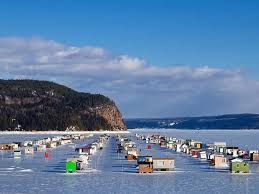

Samuel Mailhot
Je suis étudiant en informatique dans le groupe 1 au collège Lionel Groulx au 100 Rue Duquet à Sainte-Thérèse.
Si je tombe en amour avec l'informatique, j'aimerais,après ma technique, continuer d'étudier à la polytechnique. Sinon, j'aimerais devenir opérateur de machinerie lourde. Je souhaite continuer à pratiquer du sport et à découvrir le monde.